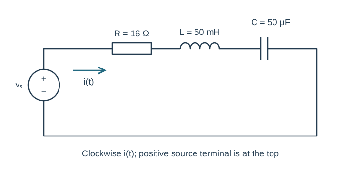
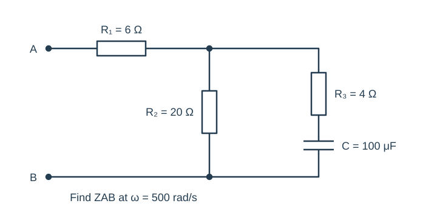
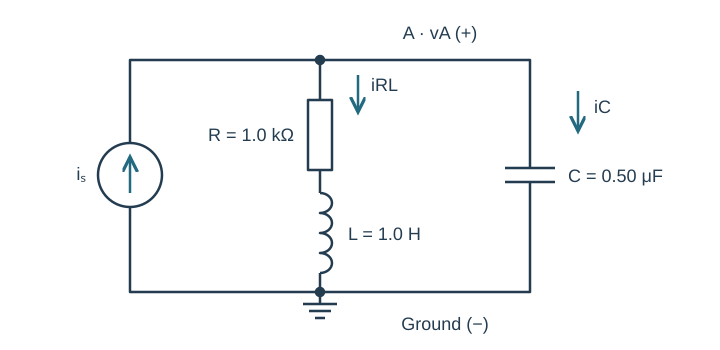
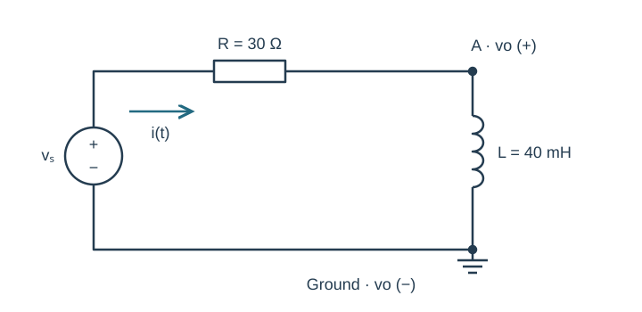
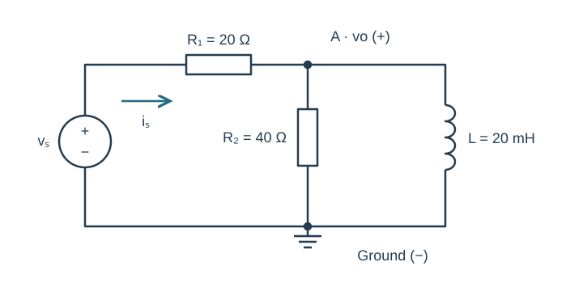

Course practice / Batch 03 / 2026-10-11 PDT
ENGR 202
正弦、相量与阻抗
Sinusoids, phasors & impedance · 第 3 组：HW 1 风格 5 题 + HW 2 风格 5 题
Locate a falling zero and a minimum
Let \(v(t)=7\cos(400\pi t+\pi/3)\;\mathrm V\), with t in seconds.
- Find amplitude, angular frequency, frequency in Hz, and period in ms.
- Find v(0), the first downward zero crossing at or after t = 0, and the first negative minimum.
- Plot two periods with a time axis in ms and mark those events.
- Write an equivalent positive-amplitude sine expression.
中文提示（不含解答）
下降过零要求导数为负；最小值发生时相位等于奇数倍 π。
A delay specified as a fraction of a period
Let \(x(t)=6\sin(800t+\pi/6)\;\mathrm A\), and let T be its period. Define \(y(t)=x(t-T/8)\). Use positive peak cosine phasors with principal phase in (−180°, 180°].
- Find X, T, and the delay in milliseconds.
- Find Y and write y(t) as one cosine.
- Compute the phase shift in both radians and degrees. Verify x(T/8) = y(T/4).
中文提示（不含解答）
先把 x 改为余弦基准；延迟使相位减小。
A quotient in the correct quadrant
Let \(a=-5+5j\) and \(b=2-3j\).
- Give a and b in polar form.
- Calculate a/b and (a + b)² in rectangular and polar form.
- Compute a times the conjugate of b.
- Verify the quotient by multiplying it by b. Use principal phase in (−180°, 180°].
中文提示（不含解答）
平方前先相加；极坐标的角度要根据实部、虚部的符号判断象限。
Subtract a sine from a cosine
Combine \(i(t)=4\cos(600t)-3\sin(600t)\;\mathrm A\) into one positive-amplitude cosine.
- Convert both terms into cosine-reference phasors and add them in rectangular form.
- Find resultant magnitude and phase.
- Check at t = 0 and t = π/1200 s, and calculate the first positive maximum at or after zero.
- Draw equal-scale real/imaginary axes and a tip-to-tail vector diagram with units.
中文提示（不含解答）
负正弦项对应正的虚部相量；由实部取回时域。
Choose a compensating component
A signal \(v_a(t)=10\cos(1000t+\pi/6)\;\mathrm V\) is combined with another sinusoid vb(t) at the same frequency. The required sum is \(v_T(t)=12\cos(1000t)\;\mathrm V\).
- Find Vb in rectangular and polar form and write vb(t).
- Draw Va followed by Vb, and verify that the resultant is VT.
- Calculate each signal at t = 0 and t = π/2000 s. Show the sum at both times. Explain why a scalar amplitude subtraction is insufficient.
中文提示（不含解答）
目标要求同时匹配实部与虚部；补偿相量可能含负的虚部。
Series RLC with net inductive reactance
The source is \(v_s(t)=17\cos(1000t-\pi/9)\;\mathrm V\). In series are R = 16 Ω, L = 50 mH, and C = 50 μF. Current i(t) flows clockwise from the source positive terminal, as shown.
- Draw the impedance circuit with the source phasor. Calculate total impedance in rectangular and polar form.
- Find I, and write steady-state i(t). State the current phase relative to the source.
- Find VR, VL, and VC using passive voltage references, and verify their vector sum equals Vs.
- Predict i at two source phases: t = 0 and t = π/2000 s.

中文提示（不含解答）
计算总电抗后再判断超前或滞后；所有电压用一致的电流参考方向。
Reduce a resistor and a series RC branch
At \(\omega=500\;\mathrm{rad/s}\), find impedance between A and B. R₁ = 6 Ω is in series with two parallel branches: branch 1 is R₂ = 20 Ω; branch 2 is R₃ = 4 Ω in series with C = 100 μF. The diagram specifies every connection.
- Calculate the series RC branch impedance before taking the parallel combination.
- Find ZAB in rectangular and polar form, and classify its net reactance.
- Independently check the parallel combination with branch admittances. Explain why R₃ cannot be combined in series with R₁.

中文提示（不含解答）
只有不分流的相邻元件才是串联；先辨认并联两端。
A current source and cancelling susceptances
The source \(i_s(t)=0.005\cos(1000t-\pi/6)\;\mathrm A\) injects current upward into node A. Two branches connect A to ground: R = 1.0 kΩ in series with L = 1.0 H, and a capacitor C = 0.50 μF. Define vA from A to ground; both passive branch currents flow downward.
- Draw the phasor circuit and find total admittance in siemens.
- Calculate VA and write vA(t).
- Find the RL-branch and capacitor-branch current phasors and verify KCL.
- Compare the phase of VA with Is. Explain why reactive branch currents may be present even when total admittance has zero imaginary part.

中文提示（不含解答）
串联 RL 支路要整体求倒数；先统一 μF、kΩ、mA 的单位。
The inductor is the output element
The source \(v_s(t)=15\cos(1000t+\pi/6)\;\mathrm V\) drives R = 30 Ω in series with L = 40 mH. Define i clockwise. The output vo is the inductor voltage, positive at its upper terminal (node A) and negative at ground.
- Find I and Vo in rectangular and polar form. Write vo(t).
- Determine whether the output leads or lags the source and by how many degrees.
- Verify VR + Vo = Vs. Then state how the output phasor would change if the voltmeter polarity were reversed.

中文提示（不含解答）
分压公式的分子属于实际测量元件；翻转极性会乘以 −1。
A loaded RL output and late-cycle checks
The source \(v_s(t)=12\cos(2000t)\;\mathrm V\) feeds R₁ = 20 Ω. Node A follows R₁. From A to ground, R₂ = 40 Ω and L = 20 mH are in parallel. The output vo is the node-A voltage relative to ground. Source current points from R₁ toward A.
- Reduce the load and find source-current and output-voltage phasors.
- Find both load branch currents and verify KCL at A.
- Write vo(t), and predict vo at t = 0 and t = π/4000 s.
- For optional LTspice verification, give the source frequency in Hz and sine-source phase that represents the stated cosine. Choose two matching phases in a late cycle after transients settle, state their time separation, and compare cursor values with the analytical predictions.

中文提示（不含解答）
电感与 R₂ 是并联负载；仿真启动瞬间通常不能直接与纯稳态式比较。